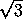
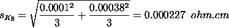
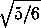
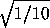

2.
Measurement Process Characterization
2.6.
Case studies
2.6.4.
|
Evaluation of type B uncertainty and propagation of error
|
|
|
Focus of this case study
|
The purpose of this case study is to demonstrate uncertainty
analysis using statistical techniques coupled with type B analyses
and propagation of error. It is a continuation of the
case study of type A uncertainties.
|
|
Background - description of measurements and constraints
|
The measurements in question are volume resistivities (ohm.cm)
of silicon wafers which have the following definition:
 =
Xo.Ka.Ft
.t.Ft/s =
Xo.Ka.Ft
.t.Ft/s
with explanations of the quantities and their nominal values
shown below:
=
resistivity = 0.00128 ohm.cm
X = voltage/current (ohm)
t = thicknesswafer(cm) = 0.628 cm
Ka = factorelectrical =
4.50 ohm.cm
FF = correctiontemp
Ft/s = factorthickness/separation
1.0
|
|
Type A evaluations
|
The resistivity measurements, discussed in the case
study of type A evaluations, were replicated to cover the following
sources of uncertainty in the measurement process, and the associated
uncertainties are reported in units of resistivity (ohm.cm).
|
|
Need for propagation of error
|
Not all factors could be replicated during the gauge
experiment. Wafer thickness and measurements required for the scale
corrections were measured off-line. Thus, the type B evaluation of
uncertainty is computed using propagation of error. The
propagation of error formula in
units of resistivity is as follows:
|
|
Standard deviations for type B evaluations
|
Standard deviations for the type B components are summarized
here. For a complete explanation, see the publication
(Ehrstein and Croarkin).
|
|
Electrical measurements
|
There are two basic sources of uncertainty for the electrical
measurements. The first is the least-count of the digital volt meter
in the measurement of X with a maximum bound of
which is assumed to be the half-width of a uniform distribution. The
second is the uncertainty of the electrical scale factor. This has two
sources of uncertainty:
- error in the solution of the transcendental equation for
determining the factor
- errors in measured voltages
The maximum bounds to these errors are assumed to be half-widths of
a = 0.0001 ohm.cm and
a = 0.00038 ohm.cm
respectively, from uniform distributions.
The corresponding standard deviations are shown below.
sx =
0.0000534/ =
0.0000308 ohm

|
|
Thickness
|
The standard deviation for thickness, t,
accounts for two sources of uncertainty:
- calibration of the thickness measuring tool with precision
gauge blocks
- variation in thicknesses of the silicon wafers
The maximum bounds to these errors are assumed to be half-widths of
a = 0.000015 cm and
a = 0.000001 cm
respectively, from uniform
distributions. Thus, the standard deviation for thickness is
|
|
Temperature correction
|
The standard deviation for the temperature correction is calculated from
its defining equation as shown below. Thus, the standard deviation for
the correction is the standard deviation associated with the measurement
of temperature multiplied by the temperature coefficient,
C(t) = 0.0083. The maximum bound to the
error of the temperature measurement is assumed to be the half-width
of a triangular
distribution. Thus the standard deviation of the correction for
is
|
|
Thickness scale factor
|
The standard deviation for the thickness scale factor is negligible.
|
|
Associated sensitivity coefficients
|
Sensitivity coefficients for translating the standard deviations for
the type B components into units of resistivity (ohm.cm) from the
propagation of error equation are listed below and in the error budget.
The sensitivity coefficient for a source is the multiplicative factor
associated with the standard deviation in the
formula above; i.e., the partial
derivative with respect to that variable from the
propagation of error
equation.
a6 =
(/X) =
100/0.111 = 900.901
a7 =
(/Ka)
= 100/4.50 = 22.222
a8 =
(/t) =
100/0.628 = 159.24
a9 =
(/FT)
= 100
a10 =
(/Ft/S)
= 100
|
|
Sensitivity coefficients and degrees of freedom
|
Sensitivity coefficients for the type A components are shown
in the case study of type A
uncertainty analysis and repeated below. Degrees of freedom for
type B uncertainties based on assumed distributions, according to the
convention, are assumed to be
infinite.
|
|
Error budget showing sensitivity coefficients, standard deviations
and degrees of freedom
|
The error budget showing sensitivity
coefficients for computing the relative standard uncertainty of volume
resistivity (ohm.cm) with degrees of freedom is outlined below.
Error budget for volume resistivity (ohm.cm)
|
Source
|
Type
|
Sensitivity
|
Standard
Deviation
|
DF
|
|
|
Repeatability
|
A
|
a1 = 0
|
0.0729
|
300
|
|
Reproducibility
|
A
|
a2 =

|
0.0362
|
50
|
|
Run-to-run
|
A
|
a3 = 1
|
0.0197
|
5
|
|
Probe #2362
|
A
|
a4 =

|
0.0162
|
5
|
Wiring
Configuration A
|
A
|
a5 = 1
|
0
|
--
|
Resistance
ratio
|
B
|
a6 = 900.901
|
0.0000308
|
|
Electrical
scale
|
B
|
a7 = 22.222
|
0.000227
|
|
|
Thickness
|
B
|
a8 = 159.20
|
0.00000868
|
|
Temperature
correction
|
B
|
a9 = 100
|
0.000441
|
|
Thickness
scale
|
B
|
a10 = 100
|
0
|
--
|
|
|
Standard uncertainty
|
The standard uncertainty is computed as:
|
|
Approximate degrees of freedom and expanded uncertainty
|
The degrees of freedom associated with u are
approximated by the Welch-Satterthwaite formula as:
This calculation is not affected by components with infinite degrees of
freedom, and therefore, the degrees of freedom for the standard
uncertainty is the same as the degrees of freedom for the type A
uncertainty. The critical value at the 0.05 significance level with
42 degrees of freedom, from the
t-table, is 2.018 so the expanded uncertainty is
U = 2.018 u = 0.13 ohm.cm
|